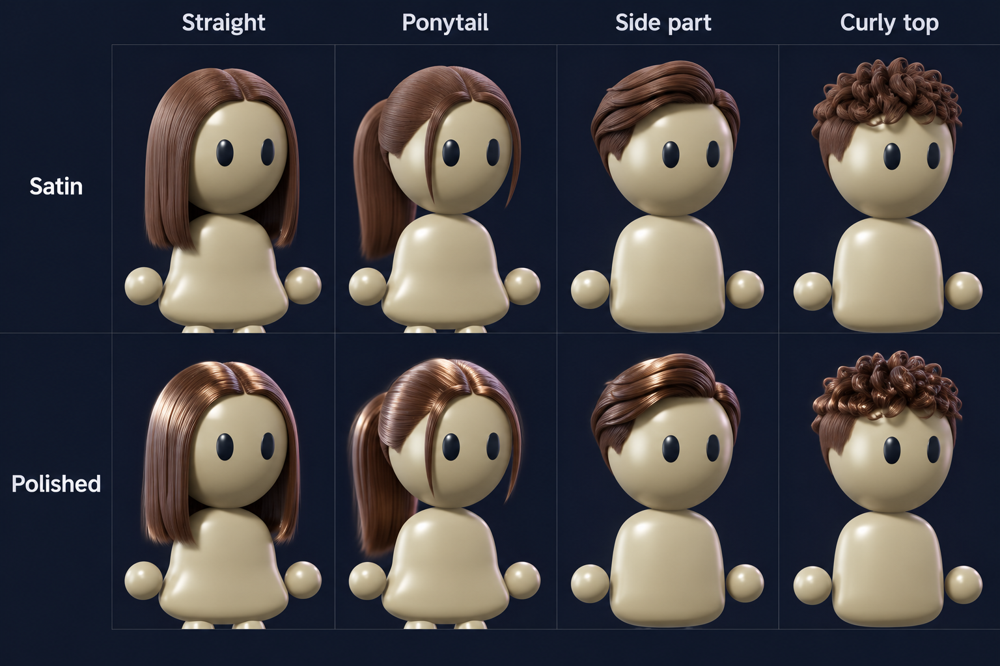

HAIR DIRECTION · 141Existing styles, more visible sheen.
I recommend a polished satin finish: brighter highlights following the locks, with fine strands still visible. The hair can be detailed beside the simpler glossy body without becoming solid plastic or metallic chrome.

Illustrated reference, not a 3D model update. Generated using our actual hairstyle renders and the140 character as references. The two rows communicate finish directions; they are not an exact same-geometry shader comparison. Tap the sheet to open it full size and zoom.
What I would preserve
- The established locks, finer strands, density and individual hairstyle identities.
- Soft roots fitted to the new round head, with free lengths preserved.
- Silky reflections with some color variation, rather than a uniform plastic shell.
Actual current hairstyle references
These are existing integration137 renders on our original models. They have not been refitted to the140 cartoon head, and their shine has not changed. The sprout in these renders is an existing preview selection.
Fine strand detail · Straight136
Full-size source render of the Straight style we selected.
Recommended first fitting examples
Straight and Ponytail for the feminine build; Side part and Curly top for the masculine build. Fit one pair first, then test stronger sheen on the actual native hair before carrying the finish across the rest.